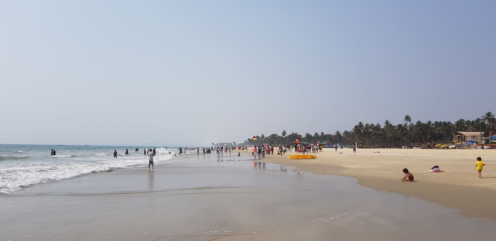
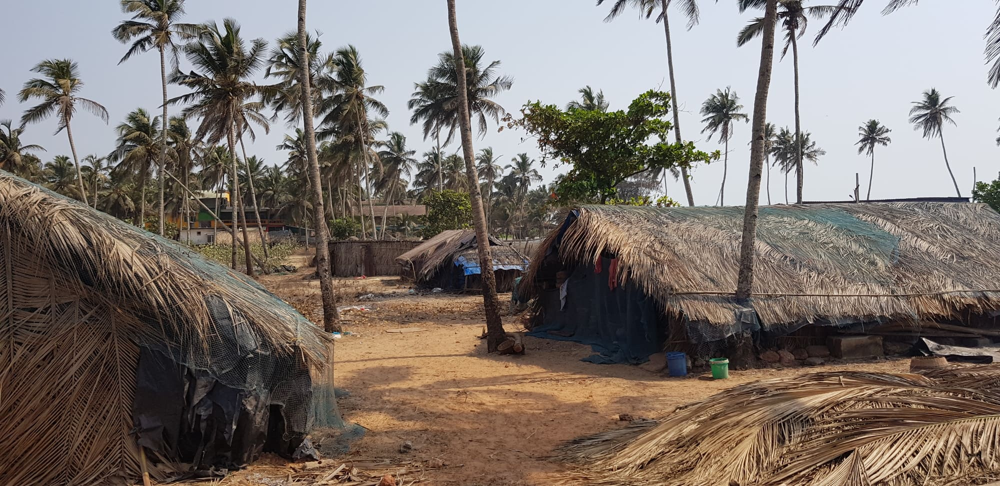
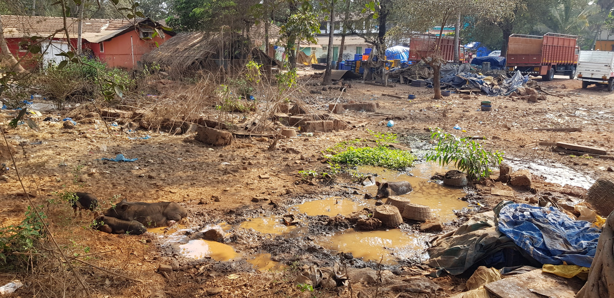
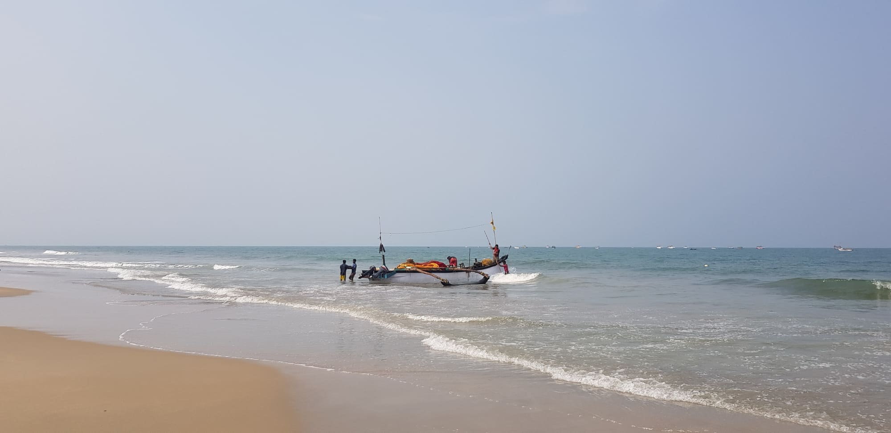

29 марта было днем вылета из аэропорта Внуково в Индию, штат ГОА, аэропорт Даболим. Это моя первая поездка в Индию и конечно я ждала ее с большим нетерпением. Полет на протяжении порядка 8 часов меня совершенно не пугал, но я предусмотрительно в классе эконом выкупила себе места туда и обратно space+, это когда у тебя перед сиденьем несколько больше пространства для ног нежели на обычном эконом месте. Лететь, так долго, не имея возможности вытянуть ножки, было бы трудно.
С собой в поездку я взяла на половину пустой чемодан, чтобы можно было обратно привести сувениры и вкусные, сочные фрукты. Из вещей в моем багаже был самый необходимый минимум: зубная щетка, шампунь, защитные средства против солнца, расческа, пара летних платьев, шорт, рубашек, футболок и купальники с шляпой. Ну конечно не обошлось без аптечки. Гастероэнтеролог посоветовала мне взять: мезим, лактофильтрум и на случай отравления но-шпу и энтерофурил. Слава богу ничего из этого не пригодилось.
Вылет был в ночь с 29 на 30 марта. Летела авиакомпанией «Россия». Я предполагала, что ночью в самолете буду спать, т.к. обычно для меня не составляет труда спать в дороге, и я могу делать это в любом виде транспорта, будь то машина, поезд, метро или самолет. Но нашлись желающие ночью в самолете употреблять алкоголь и потом всю ночь шуметь. И вот один такой человек сидел прямо передо мной. За ночь его два раза «побили» рядом сидящие пассажиры, половина салона на него ругалась, стюардесса делала ему замечания, а он знай свое все шумел и шумел, мешая окружающим. И так длилось пока он не уснул, а случилось это часа за 2 до приземления. Вышла из самолета я, конечно, в полной прострации с одним желанием поспать.
Аэропорт Даболим, где мы приземлились, почти полностью находился в состоянии реконструкции, везде шли ремонтные работы, поэтому выглядел он не очень. Пройдя паспортный контроль и выйдя из аэропорта с целью найти свой автобус, мой чемодан сразу подхватил местный носильщик багажа, и упорно отказывался мне его отдавать. Я поняла, что мне от него не отделаться и придется ему сколько-то заплатить и как вы думаете сколько? Целых 500 руб. за то, что он провез мой багаж 100 метров до автобуса. Позже я узнала, что там таких «прилипал» в аэропорту на квадратный метр по 10 человек и надо быть внимательной, чтобы не попасть в их руки.
От аэропорта до отеля расстояние было около 20 км. Когда мы выехали за пределы аэропорта первое что бросилось в глаза это большое количество мусора на обочинах дорог и вообще везде. Пластиковые бутылки, пакеты, разные упаковки, чего только там на земле не валяется. Мне это очень не понравилось. Меня посетила мысль «как можно так не любить свою землю, чтобы ее так засорять». Напомню, что в Индии живет порядка 1,5 млрд. человек. Плотность населения в штате ГОА, примерно, в 3 раза выше чем в Индии в целом. Это самый маленький штат страны из 29 штатов и бывшая Португальская колония.
Мусор вдоль дороги - обычная ситуация для Индии.Через 2 часа я была в отеле, который располагается в поселке Колва в южной части Гоа. Колва известна своими красивыми песочными пляжами. Я жила в 300 метрах от моря. Автобус привез меня в отель к 9 утра, а заселение было доступно только с 14 часов. Пришлось дополнительно заплатить за ранее заселение, так как очень хотелось спать и сил ждать несколько часов уже не было. Не буду вдаваться в подробности об отеле, скажу только то, что это был отель 4 звезды, с хорошей территорией, бассейном, уютными номерами. Зайдя в номер, я приняла душ и завалилась спать. Так начался мой первый день на Гоа.
 Пляж рядом с отелем. The Golden Crown Hotel & SpaВ Колве я провела полных 7 дней. Но для меня все дни слились в один длинный-длинный день. График у меня был такой: 7:30 утра подъем, 8 утра завтрак и после завтрака я уходила на пляж, до 16-17 часов я проводила время на пляже. Загорала, читала, пила чай масала, спала, опять читала, обедала, принимала душ и шла обратно в отель. В 19 часов я шла на ужин, по пути прогуливаясь между сувенирных лавок, разглядывая всякую всячину. В 21-22 часа возвращалась в отель и ложилась спать. И так 7 дней. За это время прочитала 2 книги Ника Перумова.
Так выглядела дорога к пляжу.  Рядом с дорогой, ведущей к пляжу, находятся хижины рыбаков.  Территория около хижин рыбаков. Собаки - постоянные обитатели пляжа. Красный флаг на фото - предупреждает об опастности, спасатели выставляют их когда море неспокойно. Туристы наблюдают за тем как местные вытаскивают сети из моря.Ежедневно мой путь на море пролегал через место, где разместились местные рыбаки. Каждое утро они спускали свои лодки на воду, выходили в море. Уже к часам 10 они возвращались с уловом, который тут же на берегу разгружали. Женщины и дети сразу потрошили рыбу. Часть ее грузили и увозили куда-то, а часть раскладывали сушить на солнце. В воздухе стоял запах рыбных потрохов и соли, далеко не самый приятный. И так каждое утро. Когда рыбу чистят, то рядом вертятся собаки, кошки и вороны, в ожидании рыбного лакомства.
 Рыбаки выходят в море. Лодки в море. Сохнут рыбацкие сети. Рыба сушится на солнце.Пляж в Колве действительно потрясающий, именно такой как его описывают в Интернете. Длинный, широкий, песок мелкий и хрустящий. Каждый день пляж убирают, в целом можно сказать, что он чистый, но из моря на берег выбрасывает много пластикового мусора, что несказанно меня расстраивало. Вдоль пляжа растут кокосовые пальмы, под которыми уютно разместились местные пляжные кафе – шеки. Среди них я нашла шек «Коля», в нем работал молодой человек по имени Ли, он ходил в футболке с А.С. Пушкиным и наизусть по-русски читал его стихи. Вообще в Колве почти во всех лавках и кафе говорят по-русски, меню и ценники переведены на русский язык. Очень много туристов из России.
Пляж в Колве. Протяженность пляжа около 2.5 км. Кафе "Коля".Утром в районе 9 часов и вечером в районе 17 на пляж приходит много местного населения, школьники, семьи, парочки и просто друзья. Они отдыхают, веселятся и купаются. Я узнала, что индусы по большей части не умеют плавать. Поэтому в воду они далеко не заходят и в основном толпятся в волнах у самого берега. Каждые 500 метров на пляже распложены посты спасателей и если они видят, что какой-то индус, по их мнению, зашел слишком далеко в море, то начинают свистеть в свисток и кричать ему, чтобы он выходил из воды на берег.
Местные купаются.Так получалось что я утром выходила на пляж, а вечером возвращалась именно в то время, когда там было много местных. Благодаря этому мне открылась одна особенность современного индийского менталитета. Оказывается, у индусов популярно фотографироваться с туристами. За время моего пребывания я сделала не меньше 200 фото с местными жителями. Подходили и просили сделать фото мужчины, женщины, целые семьи или по одиночке, молодые и взрослые. В общем это было забавно, меня совершенно не раздражало, и я со всеми желающими с удовольствием фотографировалась. Люди на Гоа мне понравились, мне показалось, что все улыбчивые, дружелюбные и не озлоблены жизнью. Честно говоря, живя в России привыкаешь по большей части видеть людей угрюмых, суровых и не особенно дружелюбных в общей массе. А когда тебе каждый улыбается, это приятно, я тоже всем улыбалась.
"Люблю" усатых мужчин)). Я звезда!За время моего путешествия я съездила на экскурсию в штат Карнатака. Посетила статую Шивы высотой 37 метров в Мурудешваре на побережье Аравийского моря и водопад Дудхсагар, который находится в национальном заповеднике Бхагван Махавир, в предгорьях Западных Гат. Также побывала в отеле на территории которого выращивают много разных специй. Я увидела как растет перечная лиана, зеленый и черный кардамон, мускатный орех, кориандр, корица, масала, битель, куркума, олд спайс дерево, асафитида и карипата кари. Послушала рассказ гида о разных специях, было очень интересно. Попробовала местную самогонку фени, которую гонят из яблок кешью.
Статуя Шивы. Священное озеро Котитиртха в городе Гокарна. Стена в храме змей. Молодые пары, которые не могут иметь детей, приезжают сюда, молятся и просят послать им детей. В этих нишах они оставляют статуэтки змей как символ мужского и женского начал. Действующий крематорий. Трупы сжигают под открытым небом. Высота водопада 310 метров, он занимает 5-ое место в Индии по высоте. Жаль нет у меня более удачной фото где водопад хорошо виден. В озере водятся карпы. Джунгли рядом с водопадом. Конец марта это начало сезона сбора орехов кешью, из яблок которых гонят местную самогонку "Фени". Кафе при отеле с плантацией специй.Если говорить о еде на Гоа, то в целом она мне понравилась. Конечно в блюдах много специй и 90% из них очень острые. Но несмотря на это я с большим удовольствием все пробовала. Фаворитами стали жареный рис с морепродуктами, местное пиво Kingfisher и блюдо под название Сизлер (на раскаленной сковородке в половине ананаса подают морепродукты, картофель и салат). Также очень понравились разнообразные лепешки, которые готовят в печи тандури. Фрукты в моем меню были каждый день самые разнообразные: папайя, манго, арбузы, дыни, бананы, драгон фрукт, ананасы, кокосы и маракуйя. Воду я пила только бутилированную, но любимым напитком стал чай масала (черный чай с молоком и специями), я его дома сама варю и было очень интересно попробовать его вкус именно в Индии. Мне рекомендовали попробовать местный ром Old monk и португальский портвейн, но так как я не любитель крепких напитков, то, к сожалению, не смогла оценить их по достоинству.
К рису всегда идет много соусов. В основном все острые. Пиала с белым соусом - кефир (хорошо снимает жжение после острого). Сизлер (Sizzler). Морской окунь на гриле с рисом.В заключении хочу сказать, что побывать в Индии однозначно нужно. Посмотреть на страну, на людей, на быт и культурные особенности. Это очень интересно. И я осталась довольна своей поездкой. Повторюсь, мне только было очень грустно везде видеть горы мусора. Это не вызывало у меня брезгливости или отвращения, нет, просто грусть. Жалко землю и людей, которые живут в таких условиях. А с другой стороны, мы сами же, люди, и доводим нашу Планету до такого состояния. Поэтому призываю всех и каждого не мусорить, а в местах отдыха всегда за собой убирать.
Последний вечер на ГОА.